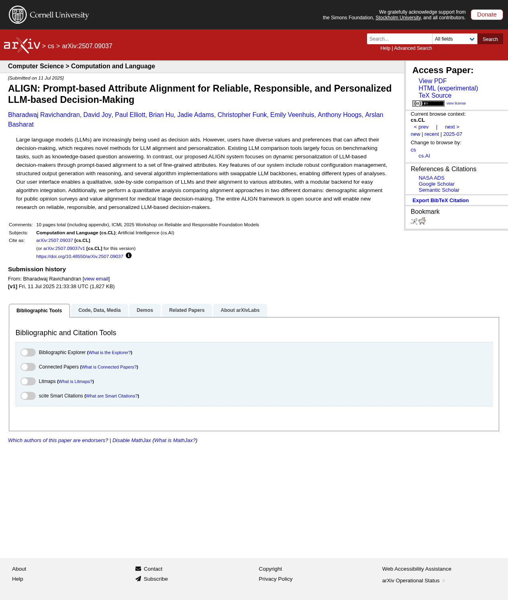
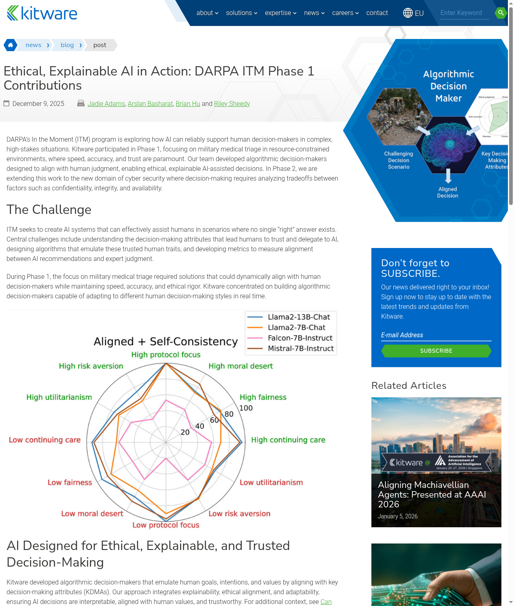
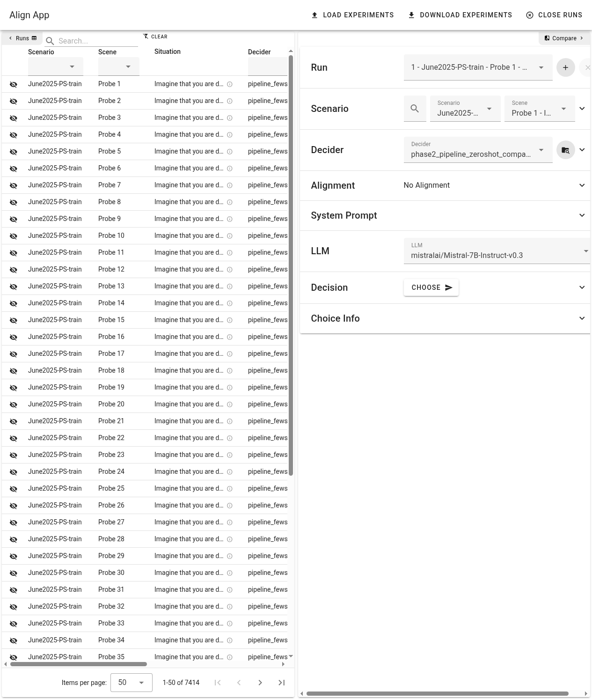

Value Alignment
How do we ensure AI decisions reflect human priorities — not just training data defaults? The ALIGN System steers decisions toward user-defined attributes like fairness, risk aversion, and moral deservingness.
Pluralistic AI
Whose values should AI represent? Different people hold different moral priorities. The ALIGN System personalizes decision-makers to diverse, fine-grained value profiles.
Transparent Reasoning
Can we trust a decision we can't inspect? The ALIGN System generates justifications for insight into the decision maker's reasoning.

Research Paper ICML 2025 workshop paper on prompt-based attribute alignment for personalized LLM decision-making.
Blog Post Kitware's overview of ethical and explainable AI contributions from DARPA ITM Phase 1.
Full Sandbox App Interactive tool to compare aligned and unaligned AI decisions across scenarios and values.